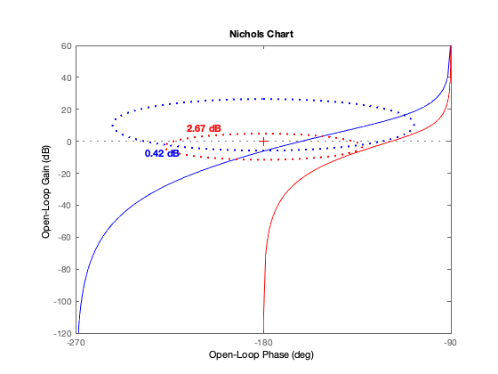

clear all
close all
clc
s = tf('s');
G = 0.045/(s^2 + 2.6*s + 1.2)
Kc = 34
C_ss = Kc/s
L1 = C_ss*G
Sp =2.67
Tp =0.42
wc_des =1
figure(1)
nichols(L1,'b'),hold on
T_grid(Tp)
S_grid(Sp)
wnorm = 1.8
wZ=wc_des/wnorm
C_z = 1+ s/wZ
L2 = L1*C_z
C = C_ss*C_z
figure(1)
nichols(L2,'r')
return
S = stepinfo(out.y.data,out.y.time,'RiseTimeLimits',[0 1],'SettlingTimeThreshold',0.05)
return
G =
0.045
-----------------
s^2 + 2.6 s + 1.2
Continuous-time transfer function.
Kc =
34
C_ss =
34
--
s
Continuous-time transfer function.
L1 =
1.53
---------------------
s^3 + 2.6 s^2 + 1.2 s
Continuous-time transfer function.
Sp =
2.6700
Tp =
0.4200
wc_des =
1
wnorm =
1.8000
wZ =
0.5556
C_z =
s + 0.5556
----------
0.5556
Continuous-time transfer function.
L2 =
1.53 s + 0.85
---------------------------------
0.5556 s^3 + 1.444 s^2 + 0.6667 s
Continuous-time transfer function.
C =
34 s + 18.89
------------
0.5556 s
Continuous-time transfer function.
